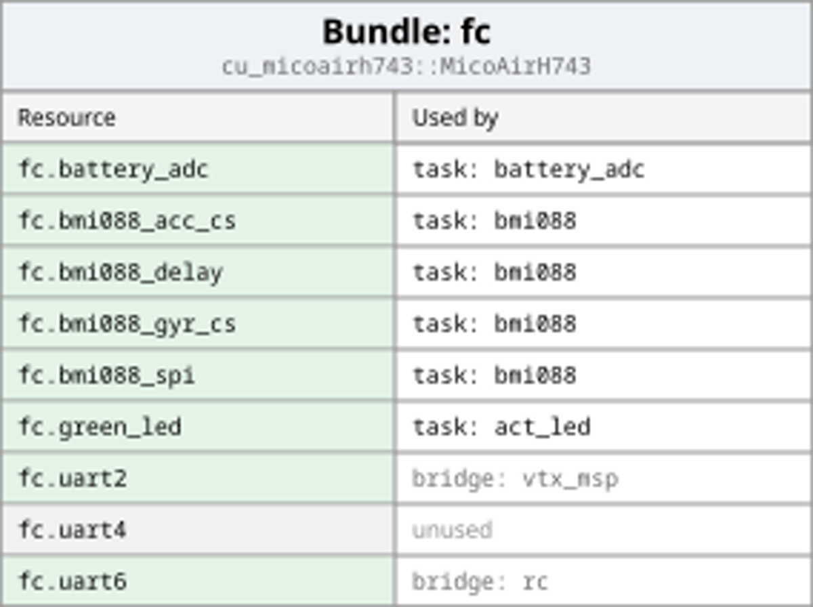
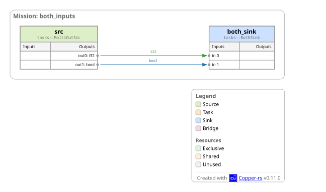
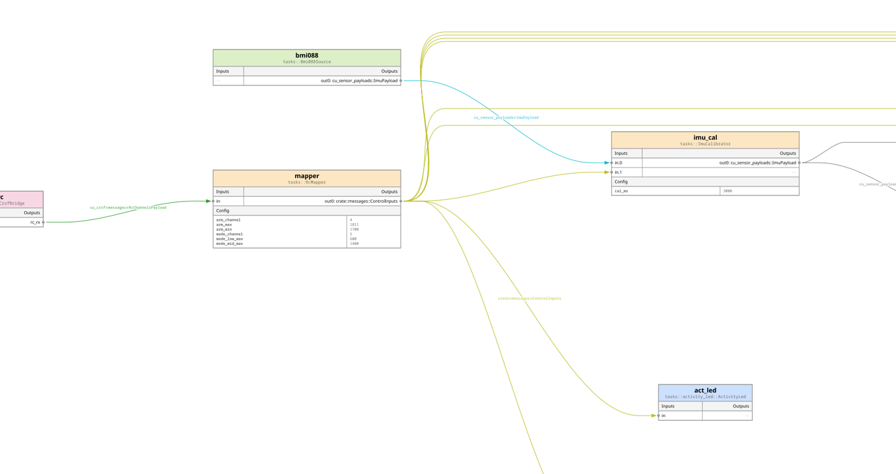

v0.13.0 - WIP¶
Breaking API Changes¶
- #682:
ComponentConfig::get<T>()andNode::get_param<T>()now returnResult<Option<T>, ConfigError>instead ofOption<T>to propagate type conversion errors;CuConfig::serialize_ron()anddeserialize_ron()now returnCuResultinstead of panicking. See migration guide in the PR description.
v0.12.0 - 2026-01-15¶
High Level¶
Resources are now first-class in Copper: you can describe hardware endpoints and shared system services in config, then bind them to tasks/bridges without rewriting code. Multi-output tasks land, mission/DAG rendering is clearer, and the flight controller stack is now a solid base for autonomous flying machines on off-the-shelf hardware.
Breaking API Changes¶
-
Resources are now explicit in task/bridge constructors
Why: resources are now configured incopperconfig.ronjust like config, so ownership/sharing and board wiring live in the mission config instead of task code. This keeps tasks portable across missions/boards and makes resource lifetimes consistent.
Before (v0.11: no resources parameter):rust impl CuTask for TelemetryTask { fn new(cfg: Option<&ComponentConfig>) -> CuResult<Self> { let port: String = cfg.and_then(|c| c.get("serial_port")).unwrap(); let serial = SerialPort::open(port)?; Ok(Self { serial }) } }After (v0.12: no resources needed, use()and ignore_res): ```rust impl CuTask for TelemetryTask { type Resources<'r> = ();fn new(cfg: Option<&ComponentConfig>, _res: ()) -> CuResult
{ let port: String = cfg.and_then(|c| c.get("serial_port")).unwrap(); let serial = SerialPort::open(port)?; Ok(Self { serial }) } } After (v0.12: with resources):rust pub struct TelemetryResources<'r> { pub serial: Owned, }
impl<'r> ResourceBindings<'r> for TelemetryResources<'r> { type Binding = TelemetryBinding;
fn from_bindings(
mgr: &'r mut ResourceManager,
map: Option<&ResourceBindingMap<Self::Binding>>,
) -> CuResult<Self> {
let map = map.expect("serial binding");
let serial = mgr.take(map.get(TelemetryBinding::Serial).unwrap().typed())?;
Ok(Self { serial })
}
}
impl CuTask for TelemetryTask { type Resources<'r> = TelemetryResources<'r>;
fn new(_cfg: Option<&ComponentConfig>, res: Self::Resources<'_>) -> CuResult<Self> {
Ok(Self { serial: res.serial.0 })
}
} ```
- Messages must implement
Deserialize
Why: every Copper message now round-trips through serde so comm systems (Zenoh bridges, Copper-to-Copper, Copper-to-foreign) stay compatible across transports with the flexibility of serde.CuMsgPayloadnow requiresDeserializeOwned. (#648)
New Features¶
-
Resources system (bundles + two-phase init + exports)
Define hardware endpoints and shared system services (serial ports, buses, thread pools, memory arenas, etc.) incopperconfig.ronand bind them by name to tasks/bridges. Think of it as a hardware abstraction/wiring layer: tasks ask for named resources and the config decides which board resource they get. Resource tables are now rendered in DAGs. (#557, #580, #581, #579, #562, #619, #631)
 -
Multi-output tasks
Tasks can emit multiple outputs natively, unlocking richer graph topologies. (#635)
 -
Mission/DAG rendering upgrades
Custom SVG renderer, clearer layout, legend/credit, and CuGraph helpers for repeated patterns. (#588, #642, #589, #611, #556)
Generate your own with:cargo run -p cu29-runtime --bin cu29-rendercfg -- examples/<app>/copperconfig.ron --mission <id>(writesoutput.svg, add--opento preview)
 -
Logging additions
New textlogs support, a temporary EOF marker to recover logs cleanly after abrupt power loss (think yanking a drone battery), and FC log extraction helpers. (#623, #535, #593)
Flight Controller SDK (MVP+)¶
This is now a strong base for autonomous flying machines on off-the-shelf hardware, with Copper handling the control, logging, and radio/ESC plumbing.
-
STM32 baseline + DSHOT
STM32 reference stack with ELRS + storage, plus STM32 DSHOT support. (#546, #575, #577) -
Video + OSD + tuning
Video transmission support, battery voltage on OSD, and tuning/airmode improvements. (#602, #621, #622, #624, #598) -
Sensors and AHRS
BMI088 driver + logging, updated MPU9250 registry driver, generic IMU payload, and base AHRS task. MSP sensor decoding into the FC pipeline. (#592, #552, [#536], [#540], #630) -
Optical flow mission
Theflowmission is the base FC graph plus the optical flow sensor and its logging, so you can toggle it without rewriting the baseline mission. (#647)
Enhancements¶
- CuError cause chaining for clearer error context. (#608)
- Default double-buffering for Copperlists. (#578)
- Cu-bincode fork to stabilize embedded serialization. (#576)
- Worktree and justfile polish for dev workflows. (#597, #605, #606, #607)
Bug Fixes¶
- Multi-input routing bug fixed. (#604)
- Background task determinism restored. (#533)
- Consolemon exit crash fixed. (#555)
no_stdlogmon compile fix. (#550)- Compile test now emits distinct errors per channel. (#570)
Dependency Updates¶
defmt1.0 (#634)buddy_system_allocator0.12 (#636)embedded-alloc0.7 (#599)linux-embedded-hal0.4 (#539)bevy0.17 (#590)iceoryx20.8 (#587)rerun0.28 (#574)cached-path0.10 (#573)svg0.18 (#601)tui-widgets0.7 (#600)
Special thanks¶
- Yang Zhou for release engineering work (CI refactors, parallelism, and caching) that kept the pace of this release.
v0.11.0 - 2025-11-26¶
High Level¶
In this release we are introducing a new type of tasks: Bridges to help users implement multi-channel transports (serial, CAN, ELRS radios, ESC buses…). Technically they are like a set of our existing sources and sinks bundled into one logical component, it makes it easier to manage state from external systems and Copper.
This release also delivers the minimum viable set of crates to build a Copper-native flight controller!
MSP messaging, PID control, ELRS/CRSF radio links, and bidirectional DSHOT ESCs all run in no_std.
Flight controllers are only the first vertical we are bootstrapping but we will rotate through specialties (driving, etc...) to continue to give some basic components to get you started quickly with Copper.
New Features¶
-
CuBridge Runtime + docs
Bridge landed end-to-end: config parsing (#490), runtime scheduling (#495), and graph APIs (#491, #500) now understand multi-channel transports with typed payloads and shared resources. The new CuBridge Concept page explains how to declare Tx/Rx channel sets, map them in missions, and extend bridge lifecycles. Acu_bridge_testexample (#509) pairs with the monitoring tooling so you can dry-run bridges locally before flashing firmware. -
Bridge-aware monitoring & graphing
cu_consolemonrenders bridges directly in the TUI DAG (#510, #511) and the live graph now matches the DOT export down to the shared transport connectors (#512, #513).
Flight Controller SDK (MVP / Prototype)¶
We are waiting for a couple of rp2350-based FC boards to test it in flight but if you are interested to start developing your own, it works very well on our devkit with the SDcard logging support etc.
- MSP everywhere (
no_std+ bridge)
The MSP library/bridge combo is now fullyno_stdand built on top of the newcu_embedded_registry, so you can share UART handles between copper crates on MCUs (bda362600, #516). MSP (MultiWii Serial Protocol) remains the lingua franca for controllers such as INAV, Cleanflight, and Betaflight; the bridge exposes batch Tx/Rx channels so Copper tasks can stream RC data, sensor packets, or tuning commands without rewriting MSP plumbing. - PID controller in firmware
cu_piddrops itsstddependency and uses onlyalloc, letting you tune and run PID loops directly on bare-metal targets (#514). Tasks that already use the PID helper on Linux now compile unchanged for firmware. - ELRS/CRSF bridge (
std+no_std)
The radio link supports both environments, shares serial ports via the embedded registry, and routes telemetry back into Copper so you can log link quality or failsafe events alongside flight data (#498, bda362600). - Bidirectional DSHOT (RP2350 only for now)
DSHOT is the digital ESC bus flight controllers use to send throttle commands and receive telemetry on the same wire; the RP2350 bridge drives ESCs with DSHOT800 timings, decodes the one-wire telemetry bursts, and exposes four static channels into the task graph ([#497]). MSP + PID + CRSF + DSHOT are the core building blocks for a Copper flight controller today, and extending the stack is just writing more Rust tasks/bridges.
Remote Ops & Telemetry¶
- ELRS/CRSF remote operation stack
cu_crsfgained the samestd/no_stdduality as the rest of the bridge family, so the exact radio link you use to operate a Copper robot over ExpressLRS works both on host testbeds and MCUs (#498, bda362600). The bridge speaks CRSF for RC commands and streams link quality, battery, and failsafe telemetry down the same radio pipe, and the newcu_elrs_bdshot_demoshows it driving ESCs from a handheld radio out of the box.

- Bidirectional DSHOT flight stack demo
cu_bdshotencapsulates the RP2350 PIO/DMA programming needed to control four bidirectional DSHOT ESCs and collect their telemetry ([#497]). Combined with the ELRS bridge you can run a remote pilot loop—commands in, ESC telemetry out—entirely in Copper.
Bug Fixes¶
- The simulation generation was not able to generate a Sink proxy (replacing your actual task and callbacking the sim) if you were listening to 2 other tasks as input. This is fixed with (#512). Thank @matthewashton-k for your patience on this one.
Enhancements¶
-
We made some monitoring TUI visual improvements (more compact, nicer icons and merging connectors)
-
CuBridge UX polish: optional routes on bridge channels (#499) and assorted QoL cleanups (#500) make mission authoring less verbose.
- Vendored TUI nodes: we now ship a patched
tui-nodescopy tailored for bridge rendering insidecu_consolemon. - Weekly CI: embedded-crate detection got smarter so ARM-only components stay exercised automatically (#507).
- Dependency refresh:
ron 0.12(#503),cudarc 0.18(#504), andrerun 0.27(#506) keep the desktop toolchain current. - no more rkv: After a discussion with Mozilla it was clear that they won't support the lmdb backend we used for storing our string indexes for our structured logging. We swapped the implementation to a very dumb lock + bincode dump. At some point we will improve that with a system similar to what defmt uses (that is scalable per compiled crate).
- no more console corruption: there was ways the system could quit from cu-consolemon without restoring properly the console, we fixed them (#526).
Special thanks¶
- Yang Zhou for making our Weekly CI keep up with this crazy pace of development!
v0.10.0 - 2025-10-19¶
High Level¶
Major milestone: baremetal support lands across the stack, SD/eMMC logging backends, CMSIS-DAP probe workflow. RP2350 is the reference platform; examples and scripts are included.
New Features¶
-
Baremetal (no_std) end-to-end
Ported core crates and runtime tono_stdand added embedded tests to CI (#444, #446, #447, #449, #450, #451, #452, #453, #454, #455, #456, #457, #458, #459, #460, #461, #466, #467, #468) -
RP2350 Reference Example
examples/cu_rp2350_skeletona "blinky" example for Copper on its reference platform to get you started quickly. Pairs with docs and a formatting script for the Copper log partition on SDCards. (#467, #468) -
RobotClock with Calibration (baremetal + host)
New calibrated clock that accepts an external reference (RTC/GPS/etc.) on embedded and desktop; raw counter access standardized. (#478) -
Logging straigth to a filesystem partition: SD / eMMC logging backends
Embedded backends for unified logging (#473, #474) -
CMSIS-DAP probe workflow + defmt bridge
Probe defaults,cargo rundeploy loop via probe; bridged the Copper logging todefmtfor MCU-friendly debugging. (#470) -
Host vs Firmware split
Cleaner tree and CI: host utilities (incl.run-logreader) live outside firmware paths. (#476) -
More tolerant log reader
No longer panics on unclosed logs; returns an error instead. (#477)
Enhancements¶
- Stabilized std/no_std/sim combos and removed legacy
hostfeature in favor of explicitstdflags where applicable. (#462) - Config & runtime refactors for embedded storage backends in
CuApplication. (#472)
v0.9.1 - 2025-09-12¶
High Level¶
Point release improving simulation control, fixing task indexing bugs, and refreshing several dependencies for long-term maintenance.
New Features¶
run_in_simfor Sources & Sinks (#431)
Override Copper’s default sim stubbing for hardware endpoints. Useful when your sim must keep talking to external middleware (ROS bridge, Zenoh, etc.).
ron
(
tasks: [
(
id: "ros_bridge",
type: "tasks::RosBridgeSink",
run_in_sim: true, // real sink runs even in sim
),
]
)
Bug Fixes¶
- Task output index calculation fixed to select the correct output slot. (#426)
- Index into output arrays now uses
node_idrather thanoutput_position. (#430) - Threadpool use-after-move resolved by cloning the pool correctly; improves stability for background tasks. (#416)
- cu-monitor empty status crash removed legacy workaround that caused crashes. (#415)
- Crates.io metadata corrected for publication. (#414)
- CI: disabled Windows CUDA runner until upstream action is fixed. (#424)
Dependency Updates¶
ron→ 0.11.0 (API changes adapted). (#427)pyo3→ 0.26.0 (ported to new API). (#429)cached-path→ 0.9.0. (#428)nalgebra→ 0.34.0. (#420)cudarc→ 0.17.0. (#419)- GitHub Actions:
Jimver/cuda-toolkit0.2.26 → 0.2.27. (#425) - GitHub Actions:
actions/checkoutv5. (#423)
v0.9.0 - 2025-07-31¶
High Level¶
This release is primarily driven by user requests. It introduces a full transform library (à la tf2 for ROS), new keyframes in the logs, background tasks, a log checker, and a set of runtime and logging tuning parameters to better adapt to constrained environments.
API Change¶
The task API now uses finer-grained lifetimes for input and output types. This provides greater flexibility when testing tasks and was necessary to support the implementation of background tasks:
Old API:
impl<'cl> CuSrcTask<'cl> for FlippingSource {
type Output = output_msg!('cl, RPGpioPayload);
fn process(&mut self, clock: &RobotClock, output: Self::Output) -> CuResult<()> {
self.state = !self.state; // Flip our internal state and send the message in our output.
output.set_payload(RPGpioPayload {
on: self.state,
creation: Some(clock.now()).into(),
actuation: Some(clock.now()).into(),
});
Ok(())
}
}
There are two changes required to port your tasks:
- The lifetime has moved from
<'cl>on the task struct to<'m>on theInputandOutputtypes. - The
processmethod now takes explicit references:&for input and&mutfor output.
impl CuSrcTask for FlippingSource {
type Output<'m> = output_msg!(RPGpioPayload);
# ^^^^
fn process(&mut self, clock: &RobotClock, output: &mut Self::Output<'_>) -> CuResult<()> {
# ^^^^ ^^^^
self.state = !self.state; // Flip our internal state and send the message in our output.
output.set_payload(RPGpioPayload {
on: self.state,
creation: Some(clock.now()).into(),
actuation: Some(clock.now()).into(),
});
Ok(())
}
}
New Component: cu_transform¶
The cu_transform crate provides real-time spatial and velocity transformations for Copper, with support for hierarchical frames, interpolation, and zero-allocation caching.
Huge thank you to @makeecat for this feature!
Features¶
- Homogeneous matrix representation of 3D transforms
- Time-stamped pose updates and interpolated lookups
- Hierarchical transform tree with parent-child frames
- Velocity computation via transform differentiation
- Rigid-body velocity frame transformations
- High-performance caching for repeated transform/velocity queries
- Zero-allocation for real-time performance
Example: Pose Lookup¶
use cu_transform::{StampedTransform, TransformTree, Transform3D};
use cu29::clock::CuDuration;
let mut tree = TransformTree::<f32>::new();
tree.add_transform(StampedTransform {
transform: Transform3D::default(),
stamp: CuDuration(1000),
parent_frame: "world".try_into()?,
child_frame: "robot".try_into()?,
})?;
let pose = tree.lookup_transform("world", "robot", CuDuration(1000))?;
Example: Velocity Lookup¶
use cu_transform::TransformTree;
use cu29::clock::CuDuration;
let velocity = tree.lookup_velocity("world", "robot", CuDuration(1500))?;
let linear = velocity.linear_velocity();
let angular = velocity.angular_velocity();
This component is ideal for real-time robotic applications needing fast, correct spatial and motion reasoning across dynamic coordinate frames.
New Features¶
- background tasks: we now have a best effort asynchronous task type. Be careful to use memory handles if you feed them a large amount of data has the input and output need to be copied to allow the asynchronism to work. How to use it? just add background: true to any CuTask (not Src nor Sink).
(
tasks: [
(
id: "task1",
type: "tasks::ExampleTask",
background: true, // that's it
),
]
The result will be set in a random future CopperList so for the downstream tasks keep a close eye on the input.tov field to know from where this message is coming from.
Note: We have not implemented the deterministic replay yet for those, but it will come in an upcoming release.
- logreader fsck: we now have a cool tool to not only check for the consistency of a Copper log and giving you some explanation of any corruption, it gives out some cool statistics about the logs:
pal ➜ cu_caterpillar (master) cargo run -r --bin cu-caterpillar-logreader logs/caterpillar.copper fsck
The log checked out OK.
=== Statistics ===
Total time -> 1.481 s
Total used size -> 14,120,984 bytes
Logging rate -> 9.09 MiB/s (effective)
# of CL -> 20,303
CL rate -> 13,708.96 Hz
CL total size -> 10,384,994 bytes
# of Keyframes -> 3
KF rate -> 2.03 Hz
KF total size -> 28 bytes
# of SL entries -> 162,433
SL total size -> 3,735,962 bytes
- Added a runtime rate target configuration (#410): Copper can be too fast, especially with the introduction of background tasks. We added a way to rate limit the CopperList creation, exactly like a frame rate limiter would work in games because probably your robot doesn't need 500KHz refresh rates normal use cases.
For example limit at 100Hz:
(
runtime: (
rate_target_hz: 100,
),
tasks: [
- Adds a way to disable logging for some tasks. (#407)
With the determinism built in Copper, you might not want to log everything. We added a way to disable the logging of any task output. It will keep the metadata of the output though (Time of Validity, Status string ....)
tasks: [
( // Normal
id: "task0",
type: "tasks::ExampleSrc",
),
(
id: "task1",
type: "tasks::ExampleTask",
logging: (
enabled: false, // HERE, no more logging for this one
)
),
- Keyframes (#369): Now Copper is able to record "keyframe" ie. the serialized state of all the tasks during runtime, sim or resim. This will allow nifty debugger features.
- force Serialize implementation on CuMsg: This guarantees that the log reader can at least reexport the messages to all the SerDe backends.
- cu-dorabench: a new benchmark more geared toward bandwith more than just latency.
Enhancements¶
- CuStampData: a lot of robotics data needs to be timestamped and this is also true for the CuMsg between tasks. We have generalized this concept so you can use a contained with a time of validity and arbitrary metadata for your own internal use in your tasks and libraries.
// CuMsg is now defined as
type CuMsg<P> = CuStampData<P, CuMsgMetadata>;
// And now TOV (the time of validity for this temporal data) is directly accessible in the main object instead of the metadata
let mut m: CuMsg<u32> = CuMsg::new(12);
m.tov = CuDuration(1000).into();
// You can define temporal data types for yourself for example
type MyTemporalData = CuStampData<f64, ()>;
// And use them directly as a field in your tasks.
- resim implemented for cu-caterpillar (#364): added that to our venerable example to test out various logger features easily.
- cargo cubuild (#365): helps you debug when a change causes a code compilation error in the generated code. Just use that instead of
buildand it will insert the generated code at the macros spot and compile it. - CuCompactString: Better log and debug output showing the string nicely.
Bug fixes¶
- Unified Logger Poisoned lock (#390): We had a cascading error when the main thread would panic and drop the logger.
- Task DAG in the Monitoring UI is slow (#391): Thanks to Matthew Ashton-Knochel from working with tui-nodes folks to optimise the direct rendering mode of it.
- Restored the original log debug behavior (#381): if nothing is specified -> debug builds enable log-debug, -> release buids enable log-info. if anything is specified, it will repect the user's choice.
- Unconditionally install ctrl-c handler (#375): instead of relying on user's code to handle that as it can cause easy log corruption.
- Fix CuCompactString initialization CuListsManager (#409): a zero init of the copper list created status strings that are all 24x
\\0. This fixes it with a correct initialzation that set them at length 0 instead. It was wasting a bunch of log space for no reason.
Dependency updates¶
- socket2 -> 0.6.0
- cuda-toolkit -> 0.2.26
- gstreamer & gstreamer-app -> 0.24
- rerun -> 0.24
- glam -> 0.30.x
- thiserror -> 2.x
v0.8.0 - 2025-05-26¶
High level¶
This release has been focused on Zenoh and ROS2 interoperability, modular configuration for larger robots with a new support for the notion of "mission" (aka mode like autonomy mode, datacollect mode etc..)
New Features¶
-
Copper to ROS2 Integration: We now support streaming Copper data directly to ROS2 (rwm_zenoh). This includes a working example bridging Copper tasks to ROS2 nodes and a translation layer for Copper message representations. See PR #348.
-
Zenoh Sink: Added a
zenoh_sinkcomponent to forward Copper messages to any other Zenoh participant with the serialization of your choice. Thanks to @kamibo (#316). -
Missions System: You can now define and generate missions from RON, with automatic default fallback. Missions are properly serialized, structured, and support reuse through includes. (#337, #294)
-
Modular Configuration System: Copper now supports reusable and parameterized config files. This feature introduces relative/absolute file includes, parameter substitution using
{{param}}syntax, and well-defined merging rules. You can now split large config files into logical components and reuse templates with different parameters.
Example templates are included under themodular_config_exampledirectory.
Thanks to @makeecat (#328) -
Memory Pool Monitoring UI: Copper's monitoring console
cu-consolemonnow includes a dedicated page to visualize memory pool usage in real time. It displays total preallocated memory, in-use buffers, memory handles in flight, and the allocation rate. This provides better observability into buffer-heavy pipelines using CopperLists and memory pools.
Thanks to @makeecat for implementing this! (#190) -
CuRateLimit Task: A new
CuRateLimittask lets you easily throttle any message flow without modifying the producing task. See #343. -
Copper Application Trait: Introduced a trait to generalize Copper applications. Enables grouping and dynamic handling of mission-defined applications. (#345)
-
Nix Setup: Introduced Nix setup for Linux, supporting CUDA / non-CUDA environment. Thanks to @makeecat! (#332)
Enhancements¶
- Compile-time log-level macro: Copper now supports compile-time log filtering for logs. This feature lets you fully disable logging macros at compile time by enabling only the relevant features in
Cargo.toml. It introduces alog-levelfield inCuLogEntry, and updates serialization, formatting, and documentation accordingly. Thanks to @makeecat! (#318) Example usage:
[dependencies]
cu29 = { version = "0.7.0", features = ["log-level-debug"] }
-
CuGraph Separation: Graph-related functionality has been extracted into its own module to reduce coupling between configuration and execution layers. (#334)
-
Bevy 0.16 Support: Copper is now compatible with Bevy 0.16, including updated patches for asset loading and avian3d. Thanks to @makeecat (#303).
-
Support for iceoryx2 v0.6.1: Iceoryx2 backend updated and patched accordingly. (#338)
-
Dockerization of ros-caterpillar:
ros-caterpillarhas been fully containerized to deal with OS dependency hell. It is now portable and future-proof. (#348)
Dependency Bumps¶
iceoryx2-bb-logbumped to 0.6.1 (#340)uombumped to 0.37.0 (#339)- Other crates:
cached-path,iyes_perf_ui,faer,ron,petgraph,nix, etc. updated to support Bevy 0.16 and latest Rust editions.
v0.7.0 - 2025-03-14¶
High level¶
This release added a set of feature useful to develop autonomy algorithms on Drone (MSP). We also have a solid set of quality of life improvements derived from real usage.
Notable regression¶
- bincode after 4 years stuck at the 2.0.0-rc3 decided to release the 2.0.0 and it broke the API. This release updates all our API calls. The good news is that decoding in memory pools are now supported, it will be useful.
New Features¶
- gstreamer support
You can define arbitraty gstreamer pipeline and hook it as an appsink to Copper are a SrcTask #239
This for example a source that will get the camera from your robot, stream it to a host on your network for live display but also convert it to GRAY8 and inject it to the Copper task graph.
(
id: "video",
type: "cu_gstreamer::CuDefaultGStreamer",
config: {
"pipeline": "v4l2src device=/dev/video9 ! image/jpeg,width=1920,height=1080 ! tee name=t t. ! queue ! jpegdec ! videoconvert ! appsink name=copper t. ! queue ! jpegparse ! rtpjpegpay ! udpsink host=192.168.1.73 port=5000",
"caps": "video/x-raw, format=GRAY8, width=1920, height=1080",
},
),
- Dynamic Threshold. A quick 0 copy implementation using an integral image. #244
- April Tag support. It can give you the relative pose of tags from images. #246
(
id: "pos",
type: "cu_apriltag::AprilTags",
config: {
"tag_family": "tag16h5",
"tag_size": 0.14,
"fx": 1513.93,
"fy": 1513.93,
"cx": 946.84,
"cy": 557.819,
},
),
- MSP (MultiWii Serial Protocol)
This is a communication protocol used on drones with INAV, cleanflight, betafligh #248
- Added 2 new robotics standard messages: Transform3D and Pose #245
They can be transformed back and forth with into() from Faer and Nalgebra so you can integrate that to your robotics algorithms smoothly.
let pose = Transform3D {
mat: [
[1.0, 2.0, 3.0, 4.0],
[5.0, 6.0, 7.0, 8.0],
[9.0, 10.0, 11.0, 12.0],
[13.0, 14.0, 15.0, 16.0],
],
};
Quality of life improvements¶
- The
Cu29crate has a new global debug_macro feature to be able to see any generation (runtime, structured logging, SOAs etc...) #247 - PyO3 (the python bindings for log reading) is now an optional feature #240 Thanks Mike Kaliman!
- The Input order in the tuples of tasks receiving messages from more than one taask is now determined by their order of connection #251 Thanks @hscoelho!
- Better feedback when a task sends an error to the runtime. Ie. now it actually triggers a debug! with the error description instead of just giving you the result of the monitoring behavior.
- CuTime now support Copy which makes clock forwarding more immediate.
- Bevy perf-ui is back (overlay for bevy) and can be used in your simulations (see cu-balancebot) #263 Thanks @AS1100K!
And finally special thanks to @makeecat for the ongoing help on the CI/CD that starts to be a complicated piece of machinery at this point.
v0.6.0 - 2025-01-20¶
New Features¶
-
Images support: We added the API to make a pool instance and bind is as a [u8] for an image buffer, see below about Memory Pools.
-
Video For Linux 2 support: We built a V4L2 source so you can read images directly from you video system on Linux. The component is named
cu_v4lhere are an example of parameters to can set in your RON file:
config: {
"device": 0, // The /dev/video0 device
"width": 3840, // Width asked
"height": 2160, // Height asked
"fps": 30, // image rate
"fourcc": "NV12", // buffer format
"buffers": 4, // how many buffers you want to allocate
"timeout_ms": 500, // time before giving up on trying to get a frame
}
https://github.com/user-attachments/assets/0858026d-bf92-418f-9525-3df5d5de9b70
-
Computer Vision: Kornia API support: Kornia is an awesome Computer Vision set of algorithms. The 2 projects cooperated to we can map Copper images to Kornia and Kornia can accept them with 0 copy! Check out the Kornia-rs project. Big thanks to the creator of this project Edgar Riba for his support!
-
0-Copy Heterogeneous Memory Pools: Said wut?
Before this release anything the tasks would touch (as input or output) would have been needed to be copied in the CopperList ie. the backing structure that makes Copper so fast and low latency with no synchronization etc. Building a complex robot is the art of having not only low latency like this but also large throughput: this is the large throughput side of Copper for modern computer architectures!
You can create large memory buffers pools either in main host memory or on a "device" for example a GPU (this is what heterogeneous memory means) and Copper will give you memory handles that you can use to: - pass the memory to another task - pass the memory to the accelerator that can use it (for example CUDA kernels see below) - pass the memory to a DMA backed driver (see the new V4L driver below)
For you developer, it means that you can safely stream multi-megabytes structures (Images, Matrices, PointClouds etc..) at no cost and you also buffer them in tasks if you need to keep them for a few cycle more (for temporal alignment for example).
- New Basic Livox Lidar Tele15 Driver:
Thanks to @luc-k1 from Konboi One.
- New Debug log pane in cu-consolemon: Before that you had to choose between the cool TUI and the text log (that was hidden behind) but thanks to @AS1100K effort we now have a tab that can capture your debug logs! (it is only enabled if you want them as they are expensive to build and if the app is build in debug mode).
- Pcap replay support: for drivers reading data from the network, it is very common to build a test set from network capture. This is a little tool that help driver developer to inject those capture and build a small test data set to validate their driver.
- Quicksort on PointCloud SOA ts: Sorting by time of validity allows the points to get merged more efficiently.
2 lidar sources getting merged.
Enhancements¶
- Prelude: we drastically simplified the imports for Copper, now you just need to do:
use cu29::prelude::*;
And you are good to go for starting Copper, creating tasks, etc...
-
More flexible project generation: The template will ask you which version of Copper you want to generate your project for.
-
Log parameter in RON: Added the section_size parameter in the RON file. It is useful to tune your logging throughput.
-
Builder pattern for the Copper Application: we made the CopperContext official and change the app init to be with a cool builder pattern like:
let mut application = CaterpillarApplicationBuilder::new()
.with_context(&copper_ctx)
.build()
.expect("Failed to create application.");
Thanks to @hscoelho for this one!
-
Log disable: Now you can disable task logging completely (if you know you won't need the data). Thanks to @AS1100K!
-
Better feedback on configuration snafu: We improved the clarity of the messages given to the user with a line number if possible in case of misconfiguration... Thanks again to @AS1100K!
-
Full dependency update: Enjoy the latest Bevy, the latest Rerun, the latest everything thanks to @makeecat. This includes the new picker that has been integrated to Bevy.
-
Logger Parameters Consistency: We now check if the various parameters of the unified logger makes sense ie. section not larger than slabs etc.. that avoids a lot of user confusion.
-
Clippy escaped our CI/CD again but thanks to an heroic effort from @makeecat we have a major improvement on our CI/CD to cross check all the platforms, features and configurations.
-
-= op on CuTime, it is useful to compute quickly time offsets.
-
ScopedAllocCounter: we improved their use by exposing a sane public API so you can check if you or one of your dependency is allocating in a given scope. Thanks to Zac8668
Bug Fixes¶
-
X11 support for Bevy on Linux: Apparently some people have not migrated to Wayland yet :P. Thanks @Paulotten
-
Missing ./logs would make cu-balancebot-sim crash: thanks @vsenn for reporting this.
v0.5.1 - 2024-12-05¶
New Features¶
-
Microsoft Windows Compatibility is finally complete #129: So many thanks to @Lishen_ for the unwaivering bruteforce port.
-
Rerun visualization for pointclouds #131: Added an example to start and feed rerun visualization with our standard pointcloud
Enhancements¶
-
BalanceBot Simulation perf overlay #137: Now you can activate the
perf-uifeature to see if the bevy side of the simulation is working well in a diag overlay. -
Iterators For SOAs (Struct of arrays) #134: SOAs can generate an iterator for a quick SOA to AOS transform and natural API.
Bug Fixes¶
-
BalanceBot Simulation Issues #137: Resolved a waste of resources on
balancebot-sim(the bevy entities were created over and over). Thanks to @Nashenas88 for spotting the issure and the initial fix. -
Pointcloud payload and Hesai structs visibility fix #132 & #133: Snafu as they were published with no client crates.
-
Multiple gammar fixes #125: Thanks to @AnyTimeTraveler for all the corrected Frenglish.
v0.5.0 - 2024-12-02¶
New Features¶
-
Deterministic Log Replay: Copper can now replay a log through your code in a deterministic fashion ie. if your tasks are deterministic, it will always output the same output from the same input! See the balancebot-resim for example.
-
Aligner Task #114: Added an aligner task that synchronizes multiple inputs by aligning matching time windows, facilitating coordinated data processing. This is particularly useful for sensor fusion.
-
:exclamation: Lifecycle Trait Removal #115: Removed the lifecycle trait to simplify task implementation and decouple passed types, streamlining the codebase. To build a minimum task a user needed to implement one method from the CuTaskLifecycle trait (new) and at least the process method from they flavor of tasks. This was forcing the implementation of 2 mandatory traits which is not necessary or useful for the user. Now we moved all the lifecycle methods in the tasks trait to only have to implement 2 traits (the task and Freezable, the serialization of its state)
Enhancements¶
-
Named Output Mapping on CopperLists #121: Implemented mapping of Copperlist indices to named outputs from tasks, allowing users to access task outputs symbolically without relying on execution order.
-
CuTimeRange Introduction #106: Introduced
CuTimeRangeto represent messages containing multiple Time of Validity (TOV) instances, such as sequences of images or IMU measurements. -
Windows Compatibility #110: Enhanced compatibility by adding a mock for
cu_ads7883, enabling compilation on Windows platforms. -
Dependency Updates #104: Performed a general dependency bump post-release to incorporate the latest improvements and fixes.
-
Faster SOA ops: adding len to the public API allows quicker preallocations.
-
f32 shortcut for dimensions and reflectivity for Lidars: simple from f32 makes it easier to not deal too much with the units.
Bug Fixes¶
-
BalanceBot Simulation Stability #118: Resolved a core dump issue on exit for
balancebot-simby enforcing specific graphics backends, ensuring clean termination. -
CuCompactStr Serialization #119: Fixed serialization and deserialization issues with
CuCompactStrto ensure correct data handling. -
Project Generation Fix #120: Addressed issues in project generation by adding
crate::forcumsgsgeneration, ensuring correct module resolution. -
Unused Code Cleanup #121: Removed unused imports and methods to maintain code cleanliness and reduce potential maintenance overhead.
-
Test Stability #107: Ignored hardware-dependent tests and added
test --workspaceto CI/CD to enhance test reliability across different environments.
v0.4.1 - 2024-11-15¶
New Features¶
- Iceoryx2 Support #87: Introduced Iceoryx2 support. Iceoryx2 is the successor to Iceoryx in pure Rust. The Copper support included a source component to receive messages, a sink component to send messages.
- Hesai XT32 Support #101: Added the preliminary support for the Hesai XT32. If you have the actual HW handy, feel free to provide us the feedback!
- First standard Lidar Message Design #99: For now in SOA out or the lidar sensors it allows SIMD optimizations for the first operations that are usually a frame transform.
Enhancements¶
- Variable-Length SoAs #100: Improved
SoA(Structure of Arrays) to support variable lengths on top of their fixed size in the Copper List. - CI Improvements #98: Integrated clippy warnings into CI, thanks to makeecat
Bug Fixes¶
- BalanceBot Simulation Reset #86: Improved the
reset_simfunctionality for the balance bot. Thanks to makeecat. - Publishing Fixes #103: Resolved various publishing issues and added dry-run validations to avoid disruptions.
v0.4.0 - 2024-10-29¶
New Features¶
- Simulation API Support: With sim-mode=true in the main Copper macro, Copper will generate for you all the callbacks at all the tasks states it is going through (Start, Preprocess, Process, etc...). Combined with the already mockable Clock it allows a very easy integration with a virtual environment.
- BalanceBot Simulation #69: Built on that and leveraging Bevy and Avian3D for realistic motion dynamics, we made a little demo of our little real world demonstrator. The real world code and the sim code are 100% identical.
- Config Embedding #78: Embedded the default
copperconfig.rondirectly into the Copper executable, simplifying deployment for the main case (just one executable to copy and that's it!!). If the file is present, it will take precedence over the embedded version. We also do log the actual config used in the logs so you can come back to it in doubt.
Enhancements¶
- Cross-Platform Compatibility for Mocking #75: Enhanced feature flags to better support various platforms, particularly macOS, enabling testing with mocked hardware dependencies. The full repo now compile under CI/CD on MacOS and Linux (previously it we could only compile and test the Core)
Bug Fixes¶
- Terminal Restoration #73: Fixed issues with terminal states not restoring properly upon exit, preventing corruption and enhancing the overall stability of simulator sessions.
- Print Output Cleanup #80: Streamlined console logging to minimize redundant or unnecessary print statements, making debugging output more manageable.
- Git LFS Migration #76: Moved heavy assets to a CDN to mitigate GitHub LFS limitations, reducing operational overhead and streamlining asset distribution.
Infrastructure and CI/CD¶
- Asset CDN Integration #35: Transitioned assets to a content delivery network to avoid the super costly Github LFS.
- Improved Documentation #82: Expanded and refined documentation across modules, enhancing clarity for new users and developers.
Internal Refactoring¶
- Logging Value Enhancements #80: Fine-tuned value logging to increase logging granularity and simplify troubleshooting in complex simulation states.
- Feature Flag Revamp #75: Restructured feature flags to better support debugging and cross-platform configurations, especially for macOS compatibility.
v0.3.1 - 2024-10-12¶
A Minor release with 2 new components and some fixes.
New Components¶
-
New cu-pid task: this is the first algorithm we publish. It is from the balancebot, a generalized PID controller logic you can reuse in your projects, see the readme in the crate.
-
New cu-consolemon monitoring: this is a TUI for Copper showing the information exposed by the new monitoring interface released in 0.3.0.
API improvements¶
- Added
MultoCuDurationfor easy time offset computations.
Various¶
- Tree Reorganization:
- Major reorganization of the repository structure for improved clarity and maintainability.
Bug Fixes¶
- Logging Fixes:
- Resolved an issue where
OnceLockwas not releasing the unified logger, preventing a clean shutdown of the logger. - Addressed an issue with a double close in the logger during shutdown.
v0.3.0 - 2024-09-30¶
This alpha release introduces substantial improvements to the Copper framework's monitoring capabilities and API flexibility.
Highlights¶
- New multisource and optional input API: The Copper engine now supports multiple and optional inputs/outputs (see PR #44).
This is a breaking change.
Now you can link 2 tasks to one in the RON file like this:
tasks: [
(
id: "balpos",
type: "cu_ads7883::ADS7883",
),
(
id: "railpos",
type: "cu_rp_encoder::Encoder",
),
(
id: "pidctrl",
type: "pidtask::PIDTask",
config: {
[...]
},
),
(
id: "motor",
type: "cu_rp_sn754410::SN754410",
[...]
),
],
cnx: [
// vvvvvvvvvv same dest!
(src: "balpos", dst: "pidctrl", msg: "cu_ads7883::ADSReadingPayload"),
(src: "railpos", dst: "pidctrl", msg: "cu_rp_encoder::EncoderPayload"),
(src: "pidctrl", dst: "motor", msg: "cu_rp_sn754410::MotorPayload"),
],
)
To help you manage the types that are generated, we are giving a set of macros to help you matching the correct input / output types:
impl<'cl> CuTask<'cl> for PIDTask {
// This tasks takes 2 inputs!
// They are given in the order of task declaration
// the input_msg! macro build a (&CuMsg<ADSReadingPayload>, &CuMsg<EncoderPayload>) tuple under the hood.
// it also works with 1 input and then you will get a straight &CuMsg<> immutable ref.
// For technical Rust reasons, you need to explicitely tie the lifetime ('cl means copperlist if you are curious: the internal structure of copper for messages)
type Input = input_msg!('cl, ADSReadingPayload, EncoderPayload);
// same thing but as an output this is a &mut CuMsg<MotorPayload>
type Output = output_msg!('cl, MotorPayload);
fn process(
&mut self,
clock: &RobotClock,
input: Self::Input, // here this is now straight the input type, it is a little simpler.
output: Self::Output,
) -> CuResult<()> {
let (bal_pos, rail_pos) = input; // you can unpack the tuple directly those are resp. &CuMsg<ADSReadingPayload> and &CuMsg<EncoderPayload>
let bal_tov = bal_pos.metadata.tov.expect("we should have had a message here!"); // the messages are now optional depending on the context they could be expected or really optional.
// we have a new method called set_payload for the output
output.set_payload(MotorPayload { power: 0.0 }); // If you don't do that it will send away a message with a None payload
- Monitoring System: The monitoring framework is now fully integrated, allowing real-time stats collection and cumulative statistics (see PRs #49, #50, and #51). We can imagine complex decision trees happening at that stage for complex robots and various degraded modes.
The monitoring component is really similar to a task, but with specialized callbacks:
// This is in the RON file, just add a monitor entry like this:
tasks: [
(
id: "task0",
type: "tasks::ExampleSrc",
),
[...]
],
cnx: [
(src: "task0", dst: "task1", msg: "i32"),
[...]
],
monitor: (type: "ExampleMonitor") // here, add a config entry if necessary
)
struct ExampleMonitor {
tasks: &'static [&'static str], // We give you the task ordinal to task id mapping (so it is stable as long as you don't change your task ids.
}
impl CuMonitor for ExampleMonitor {
// We pass you the config you gave in the RON file exactly like for the tasks.
fn new(_config: Option<&ComponentConfig>, taskids: &'static [&str]) -> CuResult<Self> {
Ok(ExampleMonitor { tasks: taskids })
}
fn start(&mut self, clock: &_RobotClock) -> CuResult<()> {
// callbacked when all the tasks, start called.
}
fn process_copperlist(&self, msgs: &[&CuMsgMetadata]) -> CuResult<()> {
// This is callbacked at the end of the processing of a copper list (basically near when the CL is getting serialized to disk after a success.
// The metadata gives you all the timings you need to check if your robot is still behaving nominally.
for t in msgs.iter().enumerate() {
let (taskid, metadata) = t;
debug!("Task: {} -> {}", taskid, metadata);
}
Ok(())
}
fn process_error(&self, taskid: usize, step: CuTaskState, error: &CuError) -> Decision {
// This is called back if any task reports an error at any step (start, process, ...)
// You can then match that taskid and compute a decision for your robot: Abort, Ignore, Shutdown (see the cu28/monitoring.rs file for semantic details.
Decision::Ignore
}
fn stop(&mut self, clock: &_RobotClock) -> CuResult<()> {
// call when the stack is stopping
Ok(())
}
}
Other Notable Changes¶
New Features¶
- Real-time cumulative stats for
CuDurations. See cu29/monitoring.rs we built an histogramming feature for timings this is super useful for monitoring components. Here is the list of everything you get it is not only pretty comprehensive but it is fixed size on memory so it should be pretty swift for any real time monitoring needs or UIs.
// on the CuDurationStatistics struct
pub fn min(&self) -> CuDuration;
pub fn max(&self) -> CuDuration;
pub fn mean(&self) -> CuDuration
pub fn percentile(&self, percentile: f64) -> CuDuration;
pub fn stddev(&self) -> CuDuration;
pub fn jitter_min(&self) -> CuDuration;
pub fn jitter_max(&self) -> CuDuration;
pub fn jitter_mean(&self) -> CuDuration;
pub fn jitter_stddev(&self) -> CuDuration;
pub fn jitter_percentile(&self, percentile: f64) -> CuDuration;
Fixes¶
- Serialization / Deserialization Bug on Value (#42). A code reformat shuffled the serialization IDs Oo.
Enhancements¶
- Virtual Output for Sinks (#53):
-
before that there was no mean to monitor sinks (or hacks you might have seen on the incoming message). Now the stack behind the scene generates a () empty message for each sink you you get the perf number cleanly for them even if they don't output anything.
-
Balance Bot Demo (#46):
- a more complete example of a real robot demo we will bring at conferences.
Miscellaneous¶
- And a bunch of cleanup / doc improments.
Copper - v0.2.3 - 2024-09-11¶
We are pleased to announce the release of Copper v0.2.3, which includes several new features, enhancements, and bug fixes. Below is a summary of the key changes in this release:
New Features¶
- SN754410 Driver Support #40: Added a new driver for the SN754410 motor driver. This driver allows easy integration with motor control applications, providing robust support for H-bridge motor control on a wide range of systems. This driver is fully compatible with the BalanceHAT.
- ADS7883 Driver #39: Introduced a driver for the ADS7883, a 12-bit SPI ADC. This addition includes comprehensive documentation in the README to facilitate setup and integration. The ADS7883 driver is also compatible with the BalanceHAT.
Enhancements¶
- macOS Development Support #25: Copper can now be developed on macOS! The CI/CD pipeline has been updated to support macOS, ensuring cross-platform compatibility for all users.
- cu29_clock Enhancements #32: Added a division feature to the cu29_clock, allowing more granular time management and synchronization within the Copper runtime.
- Structured Log Index File in Debug Mode #30: Removed the requirement for an index file in debug mode within struct_log, simplifying the debugging process ie. only the config and the executable needs to be deployed for the debug build and you get a standard debug text logging.
- Logging Slabs Addition #24: The current unified logger works with big memory mapped files. Initially we thought we could rely on the mmap resize feature of the kernel api but it just doesn't work. We are reverting into building "slabs", ie dividing the data logger into large files. Those files can be concatenated and read or directly read from the log exporter.
Bug Fixes¶
- Compilation Feedback Adjustments #33: Moved compilation feedback from standard output to standard error to better align with conventional logging practices.
- Flush and Core Dump Fixes #29: Resolved issues where changes after a section flush could cause a core dump, improving the stability of the logging system.
Infrastructure and CI/CD¶
- CI/CD Pipeline Enhancements #25: Added macOS support to the CI/CD pipeline, ensuring better cross-platform compatibility.
- Removed 'Continue on Error' in CI/CD #36: Addressed a CI/CD issue where the pipeline was green while failing Oo.
Refactoring and Internal Changes¶
-
Unified Logger Refactor #27: Refactored the Unified Logger to introduce a dual-slab logging system, improving performance and eliminating the need for remap/resize operations.
-
Runtime Loop Enhancements #21: Added a new notion of loops in the runtime plan, setting the stage for more flexible and powerful runtime behavior.
If you're looking to build your own interfacing with the SN754410 or ADS7883 drivers, we share detailed connectivity schematics with a Raspberry Pi to help you get started.
We recommend updating to this latest version to take advantage of these improvements. As always, please refer to the updated documentation and release notes for detailed information on how to integrate these changes into your projects.
If you have any questions or need further assistance, feel free to reach out to our support team.